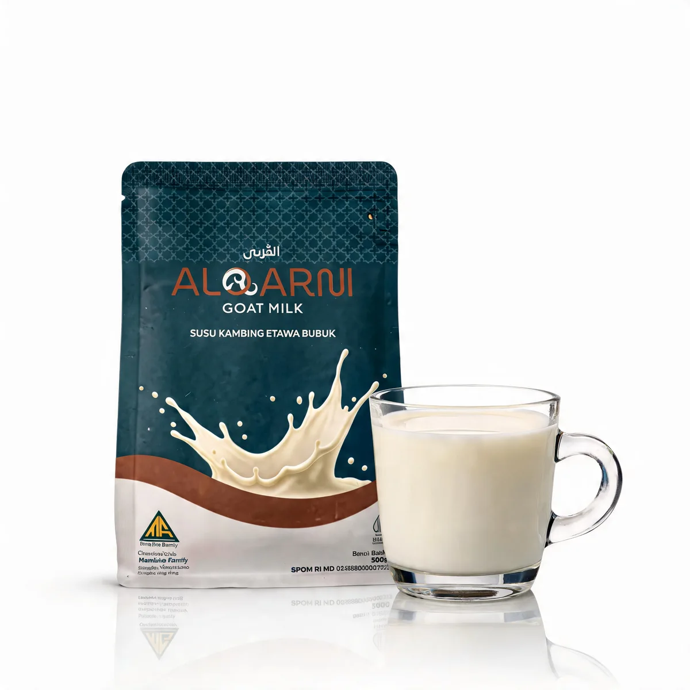

Pilihan kemasanBox sachet & standing pouch
Nutrisi alami keluarga
Satu Cangkir Hangat yang Bikin Seluruh Anggota Keluarga Ketagihan Sehat.
Perpaduan sempurna antara kelezatan rasa murni yang super creamy (tanpa bau prengus), kemudahan siap seduh, dan perlindungan imun alami harian.
Sachet & pouchPraktis siap seduh

Dari rumah, untuk keluarga.Sederhana cara menikmatinya.
Gulir ke bawah untuk melihat mengapa Alqarni jadi pilihan utama keluarga modern & dapatkan penawaran spesial hari ini.
Gratis ongkir lokalSleman & Bantul
Dibantu adminDari memilih hingga memesan
Pilihan produkSatu kebaikan.
Satu kebaikan.
Beragam pilihan kemasan.
Untuk diri sendiri, persediaan di rumah, atau berbagi bersama keluarga. Stok dan harga akhir dikonfirmasi oleh admin.
Memuat katalog…
Momen kecil, setiap hari
Segelas hangat untuk
melengkapi hari Anda.
Keunggulan
01
02
03
04
05
06
Mengapa memilih Alqarni?
Nikmati susu kambing pilihan dengan cara yang praktis, dari seduhan pertama hingga rutinitas bersama keluarga.
Atasi Nyeri Sendi & Melegakan Pernapasan
Kaya Fluorin dan Kalsium Alami yang efektif meredakan nyeri sendi, sekaligus membantu membersihkan dan melegakan saluran pernapasan harian Anda.
Tidak Bau Prengus
Banyak orang ragu minum susu kambing karena aromanya. Susu kambing Etawa kami menghadirkan pengalaman minum susu yang sepenuhnya berbeda: segar, gurih, dan bebas bau prengus.
Kuncinya ada pada penerapan SOP pemerahan dan sanitasi yang sangat ketat di peternakan kami. Mulai dari kebersihan kandang, kesehatan kambing, hingga sterilitas alat pemerahan dijaga secara profesional. Hasilnya adalah susu berkualitas tinggi dengan cita rasa lembut yang disukai seluruh anggota keluarga, bahkan bagi yang baru pertama kali mencobanya.
80% Komposisi Susu Kambing Murni
Beda dari susu biasa yang didominasi krimer penambah volume, Alqarni diformulasikan dengan 80% kadar susu kambing murni. Nutrisinya jauh lebih pekat, khasiatnya lebih cepat terasa, dan kualitasnya benar-benar terjaga.
Rendah Gula
Nikmati kebaikan susu kambing Etawa murni dengan rasa manis yang lebih ramah bagi tubuh. Kami memilih gula jagung (corn sugar) pilihan sebagai pengganti gula pasir biasa karena memiliki indeks glikemik dan tingkat kalori yang lebih rendah. Formula ini dirancang khusus agar Anda dapat menikmati gurihnya susu Etawa setiap hari dengan rasa manis yang seimbang, nyaman di lambung, dan lebih aman untuk menjaga kontrol asupan gula harian keluarga.
Ramah di Lambung & Bebas Kembung
Molekul lemaknya jauh lebih kecil dibanding susu biasa, sehingga 3x lebih cepat diserap tubuh. Sangat aman dan nyaman untuk pencernaan sensitif, penderita maag/GERD, serta yang sering kembung akibat laktosa.
Kemasan Praktis
Kami memahami kenyamanan Anda. Tersedia dalam ukuran Standing Pouch 500g yang dilengkapi zipper lock sehingga dapat ditutup kembali dengan rapat untuk menjaga kesegaran susu, serta varian Box isi 10 Sachet dengan takaran siap seduh yang praktis dibawa bepergian.
Cara menikmatiRutinitas hangat,
Rutinitas hangat,
sesederhana menyeduh.
- Takaran per gelas
- 25gram
- Frekuensi minum
- 2kali sehari
Ikuti petunjuk penyajian pada kemasan untuk takaran air dan cara menyeduh.
Cerita pelanggan
Apa kata mereka tentang Alqarni?
Pengalaman pribadi pelanggan, bukan anjuran untuk mengganti pengobatan.
Cara pemesanan
Pilih. Kirim. Kami bantu.
Pesan dari mana saja, langsung terhubung dengan admin Alqarni.
Pilih produk
Pesan satu produk langsung atau tambahkan beberapa pilihan ke keranjang.
Kirim via WhatsApp
Daftar pilihan Anda otomatis tersusun dalam pesan. Periksa, lalu kirim ke admin.
Konfirmasi pesanan
Admin mengecek stok, total harga, ongkir, dan memberikan instruksi pembayaran.
Lebih dekat, lebih mudah
Pengiriman gratis ongkir Oleh Kurir Kami Untuk Wilayah Sleman & Bantul.
Pengiriman untuk area Sleman & Bantul dilayani via kurir Alqarni. Bagi Anda yang berada di wilayah DIY lainnya, pengiriman akan dialihkan melalui Wahana Express. Sementara untuk pengiriman ke luar Jogja/DIY, kami siap mengirimkan pesanan Anda melalui berbagai pilihan ekspedisi terpercaya ke seluruh Indonesia.
Pertanyaan umumKenali Alqarni
Kenali Alqarni
lebih dekat.
Masih ada yang ingin ditanyakan? Admin kami siap membantu.
Bagaimana cara melakukan pembayaran?
Setelah pesanan dikirim melalui WhatsApp, admin akan mengonfirmasi stok dan total akhir, lalu memberikan instruksi pembayaran.
Apakah tersedia gratis ongkir?
Ya! Kami menyediakan Gratis Ongkir khusus area Sleman & Bantul.
Kapan pesanan saya dikirim?
Admin akan mengonfirmasi jadwal pengiriman setelah pesanan dan pembayaran diperiksa. Lama perjalanan mengikuti alamat tujuan dan layanan kurir.
Bagaimana aturan minumnya?
2 kali sehari, 25 gram per gelas. Ikuti petunjuk penyajian pada kemasan. Untuk kondisi kesehatan tertentu, konsultasikan penggunaannya dengan tenaga kesehatan.
Apakah produk dapat menyembuhkan penyakit?
Susu kambing Etawa kami sangat bagus diformulasikan sebagai nutrisi pendamping pengobatan nyeri sendi maupun pemulihan TBC. Kandungan kalsiumnya membantu menjaga kesehatan tulang & sendi, sedangkan protein tingginya sangat baik untuk mengembalikan stamina dan daya tahan tubuh selama masa terapi pengobatan. Catatan: Susu ini berfungsi melengkapi nutrisi harian dan mempercepat pemulihan ya, jadi sangat dianjurkan untuk tetap diminum rutin bersamaan dengan terapi/obat dari dokter.